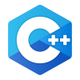
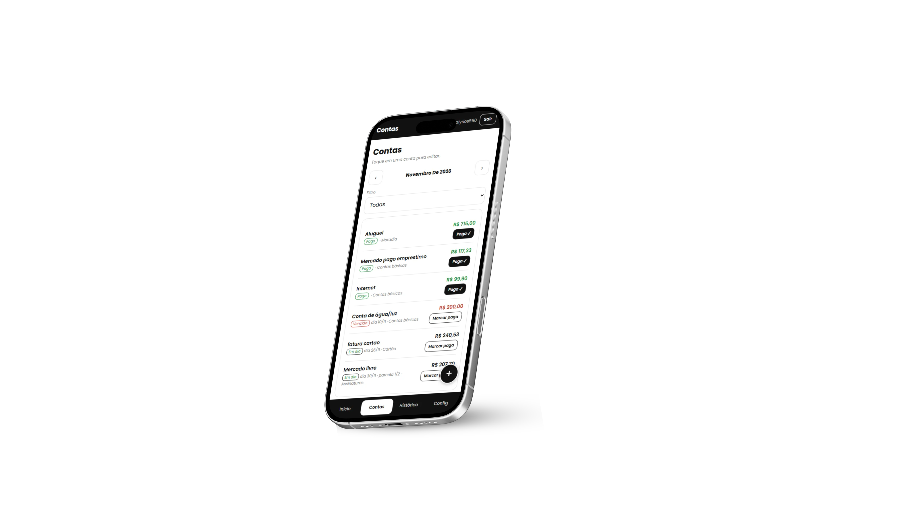
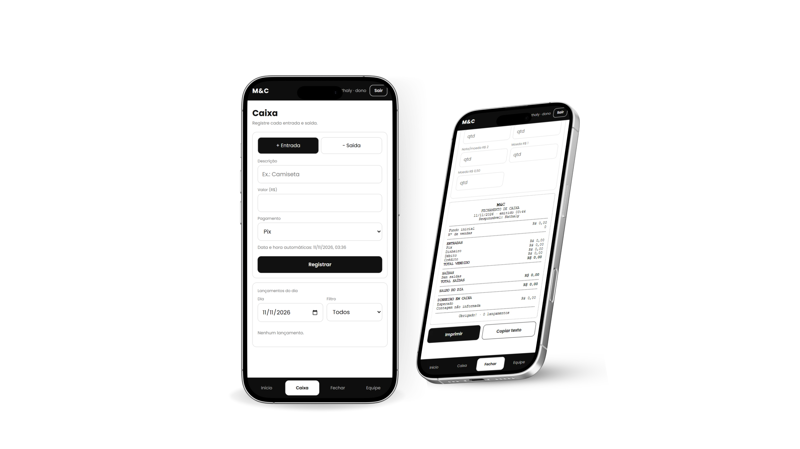

Um pouco sobre mim
Me chamo Nathaly, tenho 18 anos e sou estudante de Engenharia de Software na Universidade Federal de Mato Grosso do Sul (UFMS). Meu interesse pela programação começou em 2024, quando tive meus primeiros contatos com o desenvolvimento Frontend. Em 2026, ao ingressar na faculdade, comecei a explorar mais profundamente o Backend e foi nessa área que realmente me encontrei, principalmente por meio da linguagem Java.
Desde então, venho desenvolvendo diversos projetos que me permitem colocar em prática o que aprendo. Detesto avançar um conteúdo novo sem antes compreender e dominar o anterior. Prefiro praticar quantas vezes forem necessárias até conseguir escrever um código com confiança, entendendo não apenas como ele funciona, mas também quais serão seus resultados.
Gosto de entender a lógica por trás de cada solução, investigar erros e encontrar maneiras de melhorar o que desenvolvo. Meu objetivo é conquistar meu espaço profissional na tecnologia, especialmente no desenvolvimento Backend, e continuar aprendendo ao longo dessa trajetória.
Skills
 Python
Python
 JavaScript
JavaScript
Back end
Java
SQL (PostgreSQL)
Python

C++Front end
HTML5
CSS
JavaScript
Ferramentas
IntelliJ
VS Code
Figma
Photoshop
Projetos
Três projetos, diferentes soluções. Conheça cada um lado a lado.

#2 Sistema Financeiro
Sistema de finanças pessoais com autenticação e armazenamento no Supabase. Permite organizar contas, acompanhar pagamentos, consultar despesas vencidas, visualizar o progresso mensal e analisar gastos por meio de gráficos e histórico.
Acessar ↗Publicação web

#3 Gerenciamento de Caixa
Sistema de caixa para comércio com login e níveis de acesso de gerente e funcionário. Permite registrar entradas e saídas, consultar movimentações, controlar pagamentos, cadastrar funcionários e gerar o fechamento diário para impressão.
Em desenvolvimento
# Demais projetos
Também desenvolvi sites e sistemas para diferentes segmentos, incluindo clínica odontológica, confeitaria, hamburgueria e produtos personalizados. Os projetos priorizam interfaces intuitivas e identidade visual própria, com catálogos, carrinhos automatizados e opções de personalização. Entre eles está um trabalho realizado para um cliente real, ainda não publicado.
Além disso, criei projetos de estudo para explorar o funcionamento do Spring Boot e aprofundar meus conhecimentos em desenvolvimento Backend com Java.
Contato
Estou sempre aberta a novas oportunidades, projetos e conexões na área de tecnologia. Tenho interesse especial em desenvolvimento Backend, mas também gosto de explorar diferentes áreas da programação e participar de projetos que me permitam aprender e aplicar meus conhecimentos.
Se você tem uma oportunidade profissional, uma ideia de projeto ou simplesmente deseja trocar experiências sobre tecnologia, ficarei feliz em conversar!
Você pode acompanhar meus projetos no GitHub ou entrar em contato comigo pelas minhas redes profissionais.